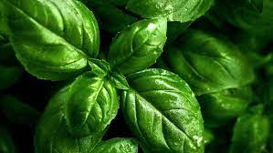

Albahaca
Una de las tres imprescindibles en la cocina mediterránea junto al orégano y el perejil. Su olor es inconfundible, intenso y penetrante. La variedad más común es la albahaca de hoja ancha o genovesa, pero existen diferentes variedades que aportan otros tonos de sabor y colores diferentes, como la albahaca morada rizada o la albahaca tailandesa.
Aunque sea en de forma moderada, es preferible regalarla dos veces al día, especialmente durante los meses más calurosos del año. Sin su dosis diaria de riego, las hojas terminarán marchitándose.